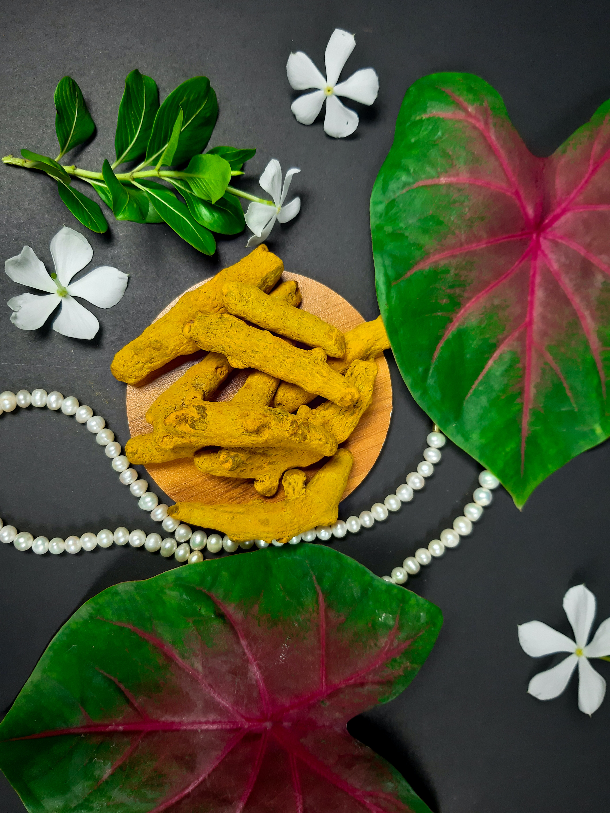
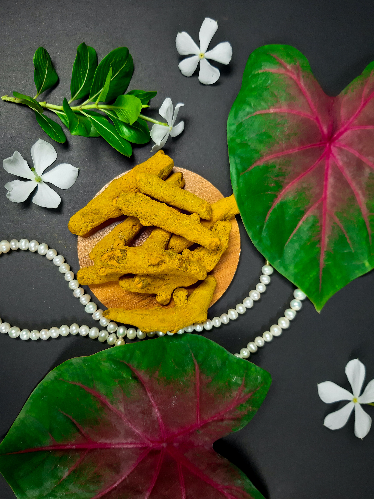

Ayurveda
The ancient Indian medical system, also known as Ayurveda, is based on ancient writings
that rely on a “natural” and holistic approach to physical and mental health. Ayurvedic
medicine is one of the world's oldest medical systems and remains one of India's traditional
health care systems.
In India, Ayurveda is considered a form of medical care, equal to conventional Western
medicine, traditional Chinese medicine, naturopathic medicine, and homeopathic medicine.
Practitioners of Ayurveda in India undergo state-recognized, institutionalized training.
Currently, Ayurvedic practitioners are not licensed in the United States, and there is no
national standard for Ayurvedic training or certification. However, Ayurvedic schools have
gained approval as educational institutions in some states.
Ayurveda therapies have varied and evolved over more than two millennia.Therapies
include herbal medicines,special diets,meditation,yoga,massage,laxatives,enemas, and
medical oils.Ayurvedic preparations are typically based on complex herbal compounds,
minerals, and metal substances (perhaps under the influence of early Indian alchemy
or rasashastra ). Ancient Ayurveda texts also taught surgical techniques,
including rhinoplasty ,kidney stone extractions, sutures, and the extraction of foreign
objects.
Some of the key principles of Ayurveda for a healthy lifestyle include:
• Understanding your unique constitution or "dosha" and following a diet and lifestyle that supports it.
• Eating a primarily plant-based diet that is fresh, whole, and seasonal, with an emphasis on balancing the six tastes (sweet, sour, salty, pungent, bitter, and astringent).
• Practicing regular exercise and yoga to keep the body and mind healthy and balanced.
• Engaging in daily self-care practices such as oil massage, meditation, and relaxation techniques to reduce stress and promote overall well-being.
• Using herbal remedies and natural therapies to address specific health concerns and prevent illness.
Overall, Ayurveda promotes a lifestyle that is rooted in balance, harmony, and connection with nature, which can lead to optimal health and well-being.
 
